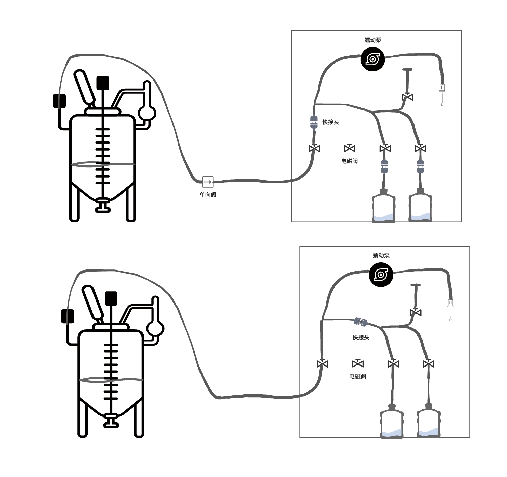
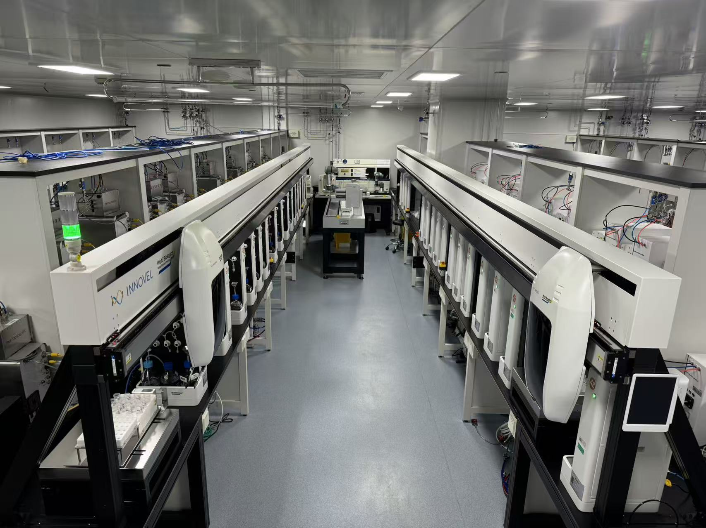
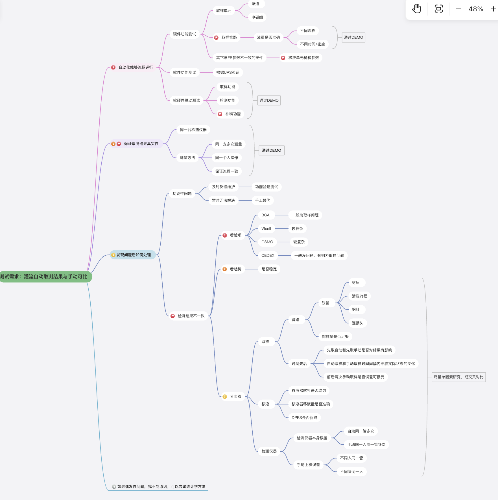

Case Study · 自动化实验室
黑灯实验室自动化系统
主导自动取样系统方案设计，参与自动补料、检测系统和 UI 设计，并推动二期实验室升级交付。
关键问题解决
解决检测结果不准确、机械臂意外停止、信号中断、操作繁琐等问题，把工程系统变成稳定可展示、可使用的产品化能力。
参考截图



Case Study · 自动化实验室
主导自动取样系统方案设计，参与自动补料、检测系统和 UI 设计，并推动二期实验室升级交付。
解决检测结果不准确、机械臂意外停止、信号中断、操作繁琐等问题，把工程系统变成稳定可展示、可使用的产品化能力。


